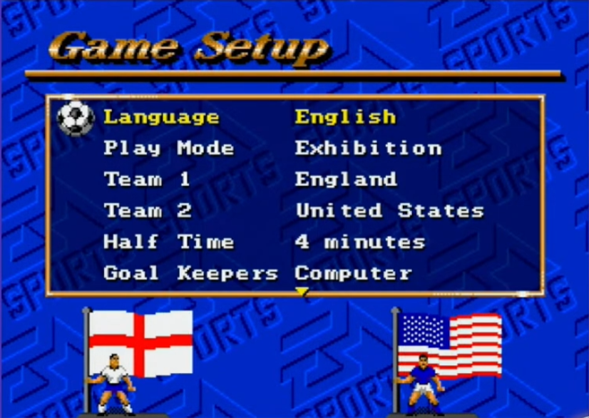
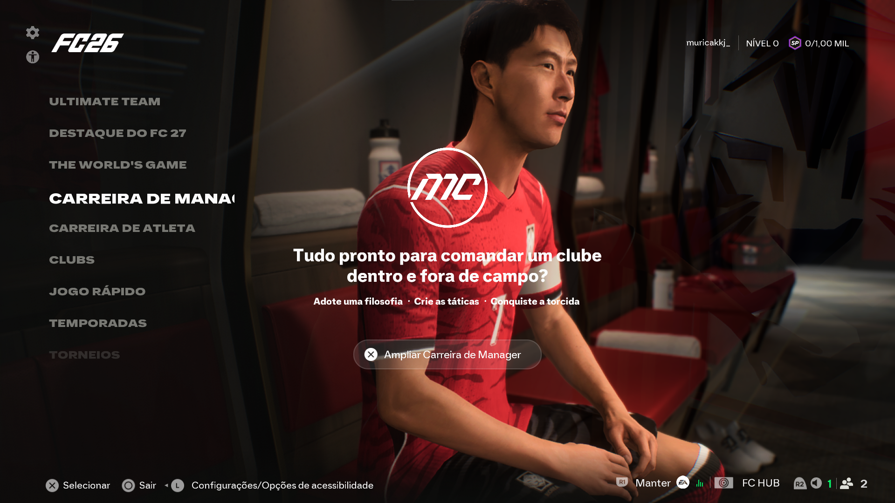

Desde o primeiro FIFA International Soccer, em 1993, dava para simplesmente escolher dois times e
jogar uma partida — o que hoje chamamos de Kick Off ou partida rápida. Só que, com o
passar das gerações, a franquia foi construindo em cima disso, criando formas completamente
diferentes de viver o futebol dentro do jogo.
Hoje, jogar FIFA ou EA SPORTS FC pode significar comandar a carreira de um único atleta, montar um
time dos sonhos com cartas de jogadores, jogar em equipe com os amigos controlando um único jogador
cada, ou disputar partidas de futebol de rua em quadras pequenas. Cada modo atrai um tipo diferente de
jogador.


as telas dos modos de jogo do FIFA International Soccer e do EA FC 26 lado a lado (primeiro e
últimos jogos lançados da franquia até então)
De Kick Off ao Modo Carreira
A base de tudo
O Kick Off continua sendo a porta de entrada mais simples: escolher dois times e
jogar, sem compromisso com temporadas ou progresso salvo.
Já o Modo Carreira foi crescendo justamente na direção oposta — ele existe para
quem quer se comprometer por temporadas inteiras. Ele se divide em dois caminhos: como
Jogador, você cria um atleta e acompanha sua evolução dentro de campo, partida após
partida; como Treinador, você assume o comando de um clube inteiro, cuidando de
contratações, táticas e resultados ao longo dos anos.
O nascimento do Ultimate Team
Um modo que virou o coração da franquia
Em fevereiro de 2009, a EA anunciou um modo totalmente novo para o recém-lançado FIFA 09: o
Ultimate Team. A ideia era simples na teoria — juntar cartas de
jogadores para montar um time dos sonhos — mas acabou se tornando, com o tempo, o modo mais jogado
e mais lucrativo de toda a franquia.
No mesmo comunicado em que anunciou a novidade, a EA aproveitou para destacar como o jogo online
já vinha crescendo: até aquele momento, FIFA 09 já somava mais de 141 milhões de partidas
jogadas online desde o lançamento europeu, alguns meses antes.
"Online is the next great frontier in sports gaming."
Tradução: "O modo online é a próxima grande fronteira dos jogos esportivos."
Andrew Wilson, à época Vice-Presidente e Produtor Executivo da franquia FIFA, em comunicado
oficial da Electronic Arts (fevereiro de 2009)
Enquanto os outros modos giram em torno do futebol tradicional, de 11 contra 11, o
VOLTA Football, lançado em FIFA 20 (2019), foi criado para representar outro lado do
esporte: o futebol de rua, jogado em quadras, gaiolas e campos improvisados ao redor do mundo.
Partidas menores, times reduzidos e um estilo visual completamente diferente tornaram o VOLTA uma
opção à parte dentro do jogo, voltada para quem curte a criatividade e o improviso do futebol jogado
fora dos estádios.
Times, cartas e jogadores
O que faz o Ultimate Team funcionar
Não importa o modo escolhido, tem uma coisa em comum entre quase todos eles: os jogadores. São
eles que fazem sentido no Ultimate Team, que ganham vida no Modo Carreira e que o próprio jogador
controla em Pro Clubs.
Alguns desses atletas, inclusive, se tornaram tão marcantes dentro do jogo quanto são fora dele.
É sobre esses jogadores lendários que fala a próxima página.